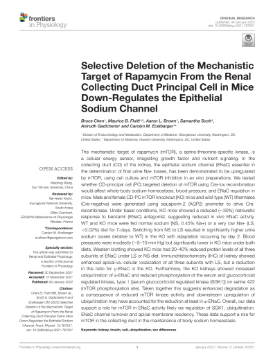

Selective Deletion of the Mechanistic Target of Rapamycin From the Renal Collecting Duct Principal Cell in Mice Down-Regulates the Epithelial Sodium Channel
El objetivo mecánico de la rapamicina (mTOR), una quinasa específica de serina-treonina, es un sensor de energía celular que integra la señalización de nutrientes y factores de crecimiento.